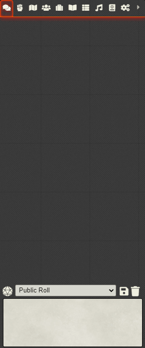

Ink in the Foundry, AKA foundry-ink
This project ports a scripting language for interactive fiction into foundry!

Using the power of the ink scripting language, you can make interactive multimedia stories for FoundryVTT.
Currently, the module supports these features:
- Loading compiled stories written in ink
- Interacting with the story in chat or console (toggle via module settings)
- Accessing Foundry directly from your ink script using the functions
ROLL,ACTOR, andMACRO - Online Documentation on github.io
There is still much work to do, which is why this is version 0.
How can I test this?
A .json for "The Intercept" is provided at /modules/ink-files/intercept.json for testing purposes. You can run it using this macro:
await FoundryInk.continueSession({
sourcefile: '/modules/foundry-ink/ink-files/intercept.json',
state: null,
visited: false
});

To compile new .json files, use the inky editor (version 0.12.0), write a file using the ink language, and then "export as JSON". Alternatively, you may use the backend of inky, the inklecate compiler.
What is this?
This is a proof of concept wrapper library for inkjs, the javascript runtime for inkle's ink language.
Ink is the MIT-licensed scripting language used to create interactive stories of many different sizes. Because the runtime is light-weight, it has been ported to Unity, Unreal, npm, and Godot.
Some example uses of the ink runtime include:
- I Would Like to Go Home, a short interactive about being a Mars exploration unit with only 5% battery power left. Playable in your browser.
- inkle's own Heaven's Vault, a nonlinear game about archaeology, ruins, language, and the secret of Heaven's Vault.
- More can be found in the ink-library
What are the current features?
This project contains:
- An embedded
inkjsinterpreter - Wrappers to interact with stories in chat or in the console. (You can switch them in module settings)
- External function bindings so that you can use a variety of foundry features in your ink script